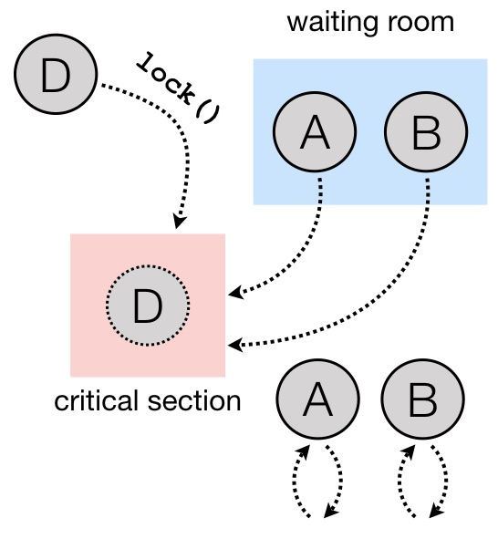

Week 06: Monitors and Blocking Synchronisation
In this chapter we will consider monitors — a mechanism for blocking synchronisation of concurrently executing threads, complementary to spin-locks, considered previously.
The code for this lecture is provided in branch 06-monitors
(package monitors) of the accompanying repository.
When Spinning isn’t Good Enough
Imagine the following artificial problem. We want to implement a
shared linearisable counter that is incremented by two concurrent
threads running in parallel with the following catch: one thread may
increment a counter if its value is even, and another thread can
increment it if its value is odd. Obviously, the threads should
“take turns” to implement such a functionality. This can be achieved
by using a combination of regular spin-locks and while-loops, as
shown in the code below:
import java.util.concurrent.locks.ReentrantLock
import monitors.Logging
import util.ThreadID
object CountTTASLock {
private var counter: Int = 0
private val TOTAL = 100
private val THREADS = 2
private val lock = new ReentrantLock()
class AdderToEven extends Thread {
override def run() = {
val i = ThreadID.get
var k = 0
while (k < TOTAL / THREADS) {
// Step 1: take the lock
lock.lock()
try {
// Step 2: only do stuff if some condition holds, otherwise yield
if (counter % 2 == 0) {
// Step 3: Do useful stuff
counter = counter + 1
println(s"Thread $i: now counter = $counter")
k = k + 1
}
} finally {
lock.unlock()
}
}
}
}
class AdderToOdd extends Thread {
override def run() = {
val i = ThreadID.get
var k = 0
while (k < TOTAL / THREADS) {
// Step 1: take the lock
lock.lock()
try {
// Step 2: wait while counter is even
if (counter % 2 == 1) {
// Step 3: Do useful stuff
counter = counter + 1
println(s"Thread $i: now counter = $counter")
k = k + 1
}
} finally {
lock.unlock()
}
}
}
}
def main(args: Array[String]): Unit = {
val evenAdder = new AdderToEven
val oddAdder = new AdderToOdd
val t1 = System.currentTimeMillis()
evenAdder.start()
oddAdder.start()
evenAdder.join()
oddAdder.join()
val t2 = System.currentTimeMillis()
val formatter = java.text.NumberFormat.getIntegerInstance
assert(counter == TOTAL)
println()
println(s"Total time: ${formatter.format(t2 - t1)} ms")
}
}
The two threads, instances of AdderToEven and AdderToOdd
correspondingly will be taking turns. Each time a thread takes a lock,
it checks if the counter is in the “suitable” position (even or odd,
correspondingly). If it is the case, it will proceed to increment it,
also increasing its iteration index k. Otherwise, it will pass the
turn by releasing the lock and keeping to “spin” on the condition k
< TOTAL / THREADS of the outer loop.
While correct, this implementation is somewhat unintuitive. Not only
it requires us to take care of synchronisation, each thread should
also ensure that it doesn’t miss its turn, essentially performing
additional spinning. In the same time, by incrementing a shared
counter, each thread implicitly “sends a message” to another
thread, so that one could take its turn. Meanwhile the current thread,
which has just incremented, will be busy-waiting for its next turn.
Java Virtual Machine (and, hence, Scala) provides a convenient
alternative to spinning/busy-waiting — blocking synchronisation, or,
simply waiting. It is implemented on top of the corresponding OS
primitives and comes in the following form.
As a standard locking mechanism, Java provides the class
ReentrantLock. We have used its instances in the past. It is very
similar to the locks we’ve seen and implemented before with the only
difference that it can be acquired by the same thread several times
in succession (and will have to be released the same number of times).
One of the methods of Reentrantlock, called newCondition,
returns an instance of a class Condition, which allows for the
following functionality.
A condition (sometimes also called conditional variable) is a
mechanism, associated with a lock that allows a thread A to
“temporarily release it” without leaving the critical section. This is
done by thread A by calling a method await() on the condition
object associated with the corresponding lock. Once having released a
lock this way, the thread A becomes suspended: it does not spin, but
rather “sleeps” (the OS takes care of putting a thread to sleep and
waking it up later). What happens next is another thread (let’s call
it B) willing to acquire the lock gets access to the critical section
and may work with it. Also, while it is in the critical section , B
may call a method signal() on the same (shared) condition object.
This will have the following effect. Once B exits its critical section
(or calls await() on the condition), the thread A will wake up and
continues its working in the critical section.
Notice that at any point in time at most one thread has been active in the critical section. Using conditional variables, we can re-implement our turn-based incrementation as follows:
object CountSingleCondition {
private var counter: Int = 0
private val TOTAL = 100
private val THREADS = 2
private val lock = new ReentrantLock()
private val cond = lock.newCondition()
class AdderToEven extends Thread {
override def run() = {
val i = ThreadID.get
for (_ <- 1 to TOTAL / THREADS) {
// Step 1: take the lock
lock.lock()
try {
// Step 2: wait while counter is not even
while (counter % 2 == 1) {
cond.await()
}
// Step 3: Do useful stuff
counter = counter + 1
println(s"Thread $i: now counter = $counter")
// Step 4: Release the other thread
cond.signal()
} finally {
lock.unlock()
}
}
}
}
class AdderToOdd extends Thread {
override def run() = {
val i = ThreadID.get
for (_ <- 1 to TOTAL / 2) {
lock.lock()
try {
while (counter % 2 == 0) {
cond.await()
}
counter = counter + 1
println(s"Thread $i: now counter = $counter")
cond.signal()
} finally {
lock.unlock()
}
}
}
}
def main(args: Array[String]): Unit = {
// ...
}
}
Notice that both calls to cond.wait() by the threads are “wrapped”
into a loop, e.g., as follows:
while (counter % 2 == 0) {
cond.await()
}
This is important for the following two reasons:
Java specification allows a blocked (waiting) thread to be “woken up spuriously” if no other thread is in the critical section now. This, however, might not correspond to the configuration in which a thread is supposed to run, hence it needs to first check an application-specific condition (e.g., “is the counter now even”) before it proceeds.
In the case if multiple threads are involved concurrently,
signal()will wake up one of them non-deterministically. In this case, when a specific thread wakes up, the state might, again, not be in the “right configuration”. Therefore the freshly awoken thread will have to check if it actually should be awaken, and otherwise go to sleep again.
After having read this code, you might have the following additional questions.
Question: What if we move
cond.signal()beforecounter = counter + 1?Answer: This will be equivalent to the original code.
cond.signal()only awakes another thread when the current one exists the critical section (i.e., callsunlock()of the corresponding lock) or callswait()on the associated condition variable.Question: What if we remove
cond.signal()?Answer: That will lead to a deadlock, as another thread, waiting on a condition, might never wake up.
Question: What happens if replace
while (counter % 2 == 0)byif (counter % 2 == 0)?Answer: Nothing particularly bad, but it’s better to re-check the condition before proceeding.
Question: What happens if we call
cond.signal()orcond.await()outside of the Critical Section marked bylock()andunlock()?Answer: This is considered a run-time error, leading to an exception.
Question: Which thread is notified by
cond.signal()in case if we have multiple threads?Answer: You should assume that a thread to wake up is chosen randomly of all threads currently waiting. If you want to awake all of them you should use
cond.signalAll(). In this case all awoken threads will be competing for the lock, with only one of them getting it, and others going back to wait.
Together, a (reentrant) lock with a number of conditional variables, allowing for this kind of wait-notify message-passing are referred to as a monitor synchronisation mechanism. Monitors were first suggested and described in 1973 paper by Sir Tony Hoare (the same Tony Hoare who invented QuickSort and program logics).
The following series of images demonstrates a possible scenario involving a monitor.
On the image below, a thread B has successfully acquired the lock,
entering the critical section. It then called the method
cond.await() of a conditional variable, thus, transitioning to the
“waiting room” with threads that have been suspended during their CS.
{kind=link}
Next, thread C enters the critical section, calling
cond.signaAll() and then unlock(). This prompts two waiting
threads, A and B, to wake up and compete for the lock again.
{kind=link}
In the same time thread D enters the competition, acquiring the lock, sending both A and B to spin until D leaves the critical section, thus, giving them again a chance to acquire the lock.
{kind=link}
Using Multiple Conditional Variables
We can restructure our implementation of turn-based counter, reducing the amount of overhead necessary to acquire the lock, replacing it by the waiting. For this, we are going to emit two condition variables associated with the same Java lock. The resulting implementation is as follows:
object CountMultipleConditions {
private var counter: Int = 0
private val TOTAL = 100
private val THREADS = 2
private val lock = new ReentrantLock()
private val condEven = lock.newCondition()
private val condOdd = lock.newCondition()
class AdderToEven extends Thread {
override def run() = {
val i = ThreadID.get
// Step 1: take the lock
lock.lock()
try {
// Repeat in cycle
for (_ <- 1 to TOTAL / THREADS) {
// Step 2: wait while counter is not even
while (counter % 2 == 1) {
condEven.await()
}
// Step 3: Do useful stuff
counter = counter + 1
println(s"Thread $i: now counter = $counter")
// Step 4: Release the other thread
condOdd.signal()
}
} finally {
// Step 5: Release the lock
lock.unlock()
}
}
}
class AdderToOdd extends Thread {
override def run() = {
val i = ThreadID.get
lock.lock()
try {
for (_ <- 1 to TOTAL / THREADS) {
while (counter % 2 == 0) {
condOdd.await()
}
counter = counter + 1
println(s"Thread $i: now counter = $counter")
condEven.signal()
}
} finally {
lock.unlock()
}
}
}
def main(args: Array[String]): Unit = {
// ...
}
}
Notice that the threads wait and signal on the two different continual
variables, condEven and condOdd. Nevertheless, this does not
violate mutual exclusion, as await() and signal() are still
associated with the same lock object. However, multiple condition
variables in this case make it slightly easier to reason about the
permissions of the specific thread: each thread waits on its own
conditional variable, while signals on the one of the other thread’s.
Synchronising Many Threads with Monitors
Above we mention an additional mechanism of a conditional variable for
waking up the threads: signalAll() and explain its specifics (it
might send some threads to spin) and difference with signal(). For
instance, consider the following code that works with multiple
even/odd incrementers synchronising them via await() / signal():
object CountManyThreads {
private var counter: Int = 0
private val TOTAL = 100
private val THREADS = 10
private val lock = new ReentrantLock()
private val condEven = lock.newCondition()
private val condOdd = lock.newCondition()
class AdderToEven extends Thread {
override def run() = {
val i = ThreadID.get
// Step 1: take the lock
lock.lock()
try {
// Repeat in cycle
for (_ <- 1 to TOTAL / THREADS) {
// Step 2: wait while counter is not even
while (counter % 2 == 1) {
condEven.await()
}
// Step 3: Do useful stuff
counter = counter + 1
println(s"Thread $i (EvenAdder): now counter = $counter")
// Step 4: Signal some other threads
condOdd.signal()
}
} finally {
// Step 5: Release the lock
lock.unlock()
}
}
}
class AdderToOdd extends Thread {
override def run() = {
val i = ThreadID.get
lock.lock()
try {
for (_ <- 1 to TOTAL / THREADS) {
while (counter % 2 == 0) {
condOdd.await()
}
counter = counter + 1
println(s"Thread $i (OddAdder) : now counter = $counter")
condEven.signal()
}
} finally {
lock.unlock()
}
}
}
def main(args: Array[String]): Unit = {
val evens = for (i <- 1 to 5) yield new AdderToEven
val odds = for (i <- 1 to 5) yield new AdderToOdd
for (t <- evens ++ odds) {
t.start()
}
for (t <- evens ++ odds) {
t.join()
}
assert(counter == TOTAL)
}
}
In this example, of signal() we could have used signallAll()
without noticeable difference.
Intrinsic Java Monitors
Since the patterns of working with monitors by means of manipulating associated locks and condition variables so common, Java/Scala embed it into its object-oriented mode. Each object in these languages comes instrumented with a monitor. Since objects in Scala/Java are main units of data, this design choice aims to simplify synchronisation on all data associated with a particular object. That is, different objects would have different monitors associated with them, and hence, may be unsynchronised.
We can now demystify the statement o.syncrhonized { ... } we’ve
seen before: it simply wraps the code inside { ... } with
lock(); try { ... } finally { unlock() }, where the
locking/unlocking is done on the implicit lock associated with an
object o. Similarly, waiting/signalling on a (single) conditional
variable associated with an object is done by callling o.wait(),
and o.notify() and o.notifyAll(), correspondingly. Notice, the
names of these methods are different on purpose from those of
conditional variables so they would not be confused. We can implement
our counter example using Java, which provides special primitives for
monitor-based synchronisation:
object CountIntrinsicMonitor {
private var counter: Int = 0
private val TOTAL = 100
private val THREADS = 10
class AdderToEven extends Thread {
override def run() = {
val i = ThreadID.get
// Step 1: take the lock
CountIntrinsicMonitor.synchronized {
// Repeat in cycle
for (_ <- 1 to TOTAL / THREADS) {
// Step 2: wait while counter is not even
while (counter % 2 == 1) {
// TODO: Notice: now it's `wait()` instead of `await()`
CountIntrinsicMonitor.wait()
}
// Step 3: Do useful stuff
counter = counter + 1
println(s"Thread $i (EvenAdder): now counter = $counter")
// Step 4: Notify all other threads
// TODO: Notice: now it's `notifyAll()` instead of `signalAll()`
CountIntrinsicMonitor.notifyAll()
}
}
}
}
class AdderToOdd extends Thread {
override def run() = {
val i = ThreadID.get
CountIntrinsicMonitor.synchronized {
for (_ <- 1 to TOTAL / THREADS) {
while (counter % 2 == 0) {
CountIntrinsicMonitor.wait()
}
counter = counter + 1
println(s"Thread $i (OddAdder) : now counter = $counter")
CountIntrinsicMonitor.notifyAll()
}
}
}
}
// ...
}
Question: Why does it work in the presence of just one “conditional variable”?
Answer: Because of
notifyAll()that wakes up all threads, allowing the “right ones” to proceed eventually.Question: Will it sill work if we replace
notifyAll()bynotify()?Answer: Nom, it will deadlock, as the thread of the same “parity” can be notified, and it won’t be able to proceed, hanging on the
wait()call.Question: Why couldn’t use
this.synchronizedinstead?Answer: Called within a thread
this.synchronizedwould refer to the closest enclosing object, i.e., the thread instance itself. Since those are different for different threads, the access to the counter would not be synchronised. This is why we instead synchronise via the monitor associated with the global singleton objectCountIntrinsicMonitor.
The Lost-Wakeup Problem
Consider the following queue implementation that makes use of Java monitors:
class MonitorQueue[T: scala.reflect.ClassTag](val capacity: Int) {
import java.util.concurrent.locks.ReentrantLock
val lock = new ReentrantLock
val notFull = lock.newCondition
val notEmpty = lock.newCondition
val items = new Array[T](capacity)
var tail = 0
var head = 0
var count = 0
@throws[InterruptedException]
def end(x: T): Unit = {
lock.lock()
try {
while (count == items.length) {
notFull.await()
}
items(tail) = x
tail += 1
if (tail == items.length) {
tail = 0
}
count += 1
notEmpty.signal()
} finally lock.unlock()
}
@throws[InterruptedException]
def deq(): T = {
lock.lock()
try {
while (count == 0) notEmpty.await()
val x = items(head)
head += 1
if (head == items.length) {
head = 0
}
count -= 1
notFull.signal()
x
} finally lock.unlock()
}
}
This queue is a fine example of a concurrent blocking implementation:
it is empty, no all calls to deq() will be blocked until another
thread enqueues an element. Similarly, if it is full, enq() will
block.
What will happen if we replace notEmpty.signal() in enq() by
if (count == 1) notEmpty.signal(). Unfortunately, this will lead
to an incorrect behaviour. Imagine that thread C is about to enqueue
an element to an empty queue, while A and B are waiting because of
nonEmpty.await(). Executing if (count == 1) notEmpty.signal()
will wake up one of them, let’s say A, but before it removes an
element another thread, say D, sill enqueue another one, this time
without calling nonEmpty.signal(). Thus, the queue will have two
elements, before A removes one, and the queue will be non-empty. Yet,
B will be still waiting. This mistake is known as the Lost-Wakeup
Problem, and it can be avoided in the following way:
Signalling all threads waiting on a condition (via
signalAll()ornotifyAll()), not just one.Specify a timeout while waiting (both
await()andwait()take a number of nanoseconds to wait as an optional argument).
Read-Write Locking
In many cases a shared resource can allow multiple threads that do not modify it access it concurrently, but will require an exclusive access for someone to make modifications. This pattern is known as Readers-Writers:
Only one writer can be modifying the resource exclusively
Many readers can observe it concurrently without requiring mutual exclusion, as long as there is no write.
The structure allowing for such an access is called Read-Write Lock. It can be implemented using monitors as follows:
import java.util.concurrent.TimeUnit
import java.util.concurrent.locks.{Lock, ReadWriteLock, ReentrantLock}
/**
* @author Maurice Herlihy, Ilya Sergey
*/
class SimpleReadWriteLock extends ReadWriteLock {
private var readers = 0
private var writer = false
private val myLock = new ReentrantLock
private val myReadLock = new ReadLock
private val myWriteLock = new WriteLock
private var condition = myLock.newCondition
def readLock: Lock = myReadLock
def writeLock: Lock = myWriteLock
class ReadLock extends Lock {
def lock(): Unit = {
myLock.lock()
try {
while (writer) try {
condition.await()
} catch {
case e: InterruptedException =>
}
readers += 1
} finally {
myLock.unlock()
}
}
def unlock(): Unit = {
myLock.lock()
try {
readers -= 1
if (readers == 0) {
condition.signalAll()
}
} finally myLock.unlock()
}
// ...
}
protected class WriteLock extends Lock {
def lock(): Unit = {
myLock.lock()
try {
while (readers > 0) try {
condition.await()
} catch {
case e: InterruptedException =>
}
writer = true
} finally myLock.unlock()
}
def unlock(): Unit = {
myLock.lock()
try {
writer = false
condition.signalAll()
} finally {
myLock.unlock()
}
}
// ...
}
// ...
}
Notice that any reader using the instance of the ReadLock will be
blocked as long as a writer is present (which is indicated by a
boolean shared variable writer). Once available, the reader lock
will admit multiple readers, so the writers will have to wait on a
writer lock until the condition is notified by ReadLock’s
unlock(). A similar intuition is applied to the writer lock.
Notice that the condition does not distinguish between the roles
(readers/writers) — it is used to notify all threads currently
waiting. In principle, the lock can be improved by using two different
condition variables.
When Should We Use Monitors
Monitors (locks + conditional variables) are complementary to spin-locks. An appropriate synchronisation mechanisms depends on the use case:
Spin-locks are good when the critical sections are small (in terms of execution time), thus the spinning time will likely be small too. The main “cost” of a spin-lock is the high usage of CPU cycles while spinning, as well as added contention overhead. Thus, spinning makes sense for a multiprocessor, if we expect a short waiting time.
Monitors should be used for fine-grained management of access to a critical section, which is long. However, for small critical sections, waking up a thread requires context switching by a processor, which is also expensive. That is, waiting (blocking) is preferable if we expect to wait for a long time before getting the access to the critical section.
Other Synchronisation Mechanisms
As of now, monitors (reentrant locks + condition variables) are one of
the most popular blocking synchronisation mechanisms. However, most of
the popular concurrent libraries (such as java.util.concurrent and
C’s PThreads) provide other synchronisation primitives. Those are
typically implemented as instructions by most of the common processors.
Semaphore is similar to a lock that admits \(n \geq 1\) threads. Once the capacity is reached, the new incoming threads are blocked. Semaphores were invented by Edsger Dijkstra (the same as in Dijkstra’s algorithm) in 1963. An example of using a semaphore (in Java) can be found, e.g., by this link.
Mutex is simply a semaphore with capacity 1. As such, it is equivalent to a lock.